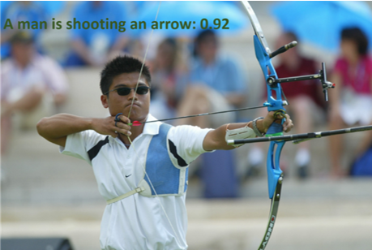
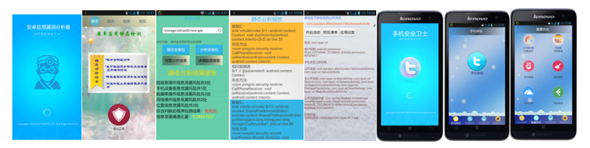
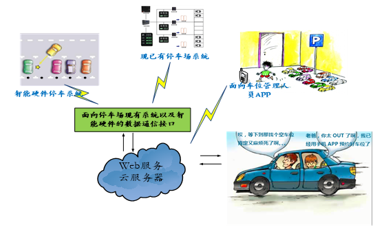
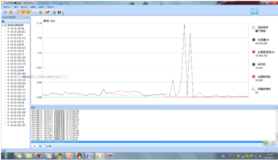
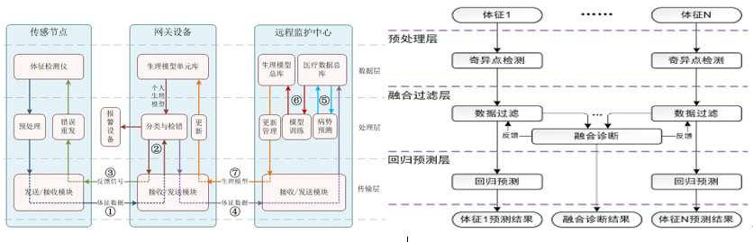

1、视频大数据智能分析与场景自动标注系统
该项目采用三维深度卷积神经网络等深度学习技术、计算机视觉技术以及Hadoop、Spark等平台的分布式计算能力，对视频场景进行分析，对视频场景内人、物等目标进行识别，对人、物等目标运动类型进行识别。在复杂场景和多角度情况下，能教准确地分析和识别视频场景内的人、物及其相关运动信息。采用双向递归神经网络模型，能够创建基于自然语言的视频场景标注信息流，信息流能够准确描述场景内人、物等目标的静态属性和运动特征。视频大数据智能分析与场景自动标注技术，可以应用于安防监控、智能交通、公安刑侦、自动驾驶、视频搜索等领域。

2、移动终端安全及应用
本项目分别研究了静态分析的污染流分析技术、动态分析的污点标记跟踪技术及机器学习的线性SVM技术，基于云服务架构技术，用户通过上传Android的APK文件到服务器，服务器负责检测上传的应用程序的漏洞和恶意行为，并返回评估信息；用户可根据评估结果，选择性的安装该应用程序，并可以给应用程序开发商提出完善程序漏洞的建议。该系统应用于Android应用程序安全检测领域。在此基础上，本项目分别研究基于云构架的移动设备信息交换模型，基于模糊理论的网站可信度划分模型，基于内容的移动设备信息过滤技术，基于特征识别的移动设备终端保护技术，使系统可应用于手机安全防护与内容过滤领域。

3、基于移动互联网的智慧停车服务平台系统
系统通过移动互联网技术向车主们提供一站式停车服务，解决目前中大型城市中停车难、难停车以及停车资源配置不合理等停车相关的问题。系统是基于云计算和大数据技术构建的车位信息管理平台，平台主要包括六大部分：面向车主的APP、面向车位管理员的APP、面向车位信息采集人员的APP、面向管理人员的后台管理平台、面向停车场现有系统以及智能硬件数据通信接口、基于云服务器的WEB服务。平台提供了智能化、多元化的客户端APP。系统采用多种车位数据采集方式，功能贴合市场需求，可整合汽车服务行业。该平台系统可用于政府互联网+公共服务领域。

4、基于SVM的P2P流量监测系统
本系统针对现有P2P流量识别方法所存在的种种弊端和不足，以及基于统计信息和基于SVM技术的P2P流量识别技术的优势，探索P2P信息统计与SVM技术之间的结合点，建立基于信息统计和SVM技术的P2P流量识别模型，以研究出可以有效识别P2P流量的P2P流量识别技术，并能够在应用层对P2P流量进行分类，区分P2P流量的类型。该系统可应用于网络管理。

5、智能医疗监护中数据融合系统
本项目综述目前业界前沿发展现状及趋势、采用的关键算法和模型，输出了《智能医疗监护中数据融合技术调研分析报告》；结合研究给出智能医疗监护系统中多生理信息数据融合的解决方案；提出较为完善的技术路线和方案架构，输出《智能医疗监护中数据融合关键技术研究报告》；验证融合模型和算法，对算法进行优化，建立动态的高血压健康评估模型，形成原型系统。申请2项专利：《一种利用心电信号与袖压信号的血压值协同报警机制》、《远程家庭保健系统》。面向16000组<心率、高血压、低血压>数据，识别准确率达到90%以上。该系统可应用于物联网智慧医疗中的远程医疗监护领域。

6、基于Hadoop的大数据存储安全及应用的研究
大数据安全技术能切实防止重要信息被破解利用。大数据环境所存储的海量数据涉及到用户的各类信息，对数据的安全性有严格的要求，大量数据的存在也要求加解密过程必须高效快捷，本课题在Hadoop平台下研究加密技术、完整性校验技术，保证数据在传输过程中的机密性和完整性。
7、淮安世界之窗物联网科技产业园
淮安世界之窗物联网产业园是南京邮电大学物联网科技产业园与淮安市政府合作引入的南京顺天实业有限公司创办的以物联网产业为主要发展目标的科技产业基地，依托南京邮电大学公共资源、科研成果以及科技园的综合服务环境，形成创业教育、创业实践、创业服务一体化的创新创业服务基地。